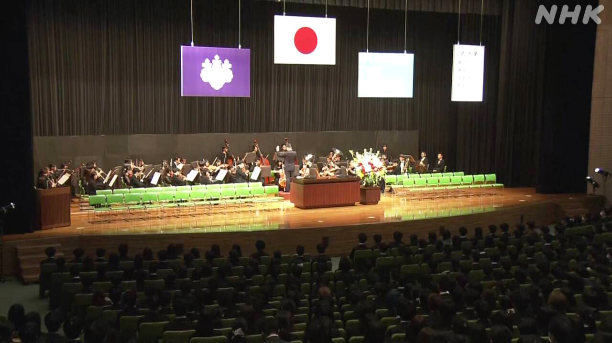
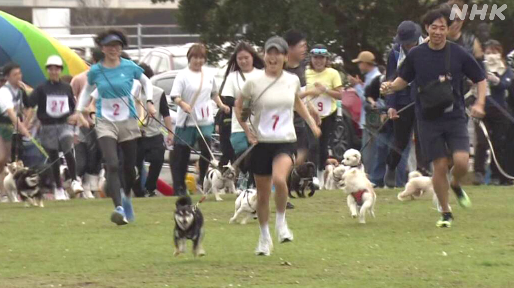

最新ニュース
1️⃣ トランプ大統領 イランへの攻撃7日まで待つかもしれない
アメリカなどとイランの戦いについてのニュースです。
トランプ大統領は「ホルムズ海峡を船が通ることができるようにしないと、発電所を攻撃する」と何度も言っています。しかし3月、「イランがホルムズ海峡を開くのを待つ。4月6日まで攻撃しない」とSNSに書きました。
4月5日、アメリカの新聞がトランプ大統領に聞きました。トランプ大統領は「7日まで待つかもしれない」と言いました。
イランは「もしアメリカなどが攻撃したら、イランも攻撃する」と言っています。戦いが激しくなることを、世界が心配しています。
2️⃣ 筑波大学で入学式があった

日本の学校は4月に始まるところが多いです。新しく学校に入る人のために入学式があります。
茨城県つくば市にある筑波大学は、6日に入学式をしました。
今年、筑波大学に入った人は4934人です。
新しく入った学生は、桜の木の下で家族などと写真を撮りました。
入学式で筑波大学の学長は「ヒトと地球の未来のためにみなさんに期待します」と話しました。
3️⃣ 日本の焼き鳥の会社がベトナムに初めて店を開いた
「鳥貴族」という店があります。
日本にたくさんの店があります。外国にも店があります。ベトナムのハノイに初めて店を開きました。
日本の店では、留学生などのベトナム人が1400人ぐらい働いています。ハノイの新しい店で働くのは22人です。みんな日本の店で働いたことがあります。
会社の社長は「日本の店で勉強したことを、ベトナムに帰ってから使うことができる。会社にとってもいいし、ベトナムの人たちにとってもいい」と話しました。
店で働く人は「私にとって日本での経験は、とても大切なものです。お客様に愛される店にしていきたいです」と話しました。
日本で働いていた外国人が国に帰って同じ仕事で働きます。ほかの会社も始めています。
4️⃣ 高知県 犬を飼っている人が犬と一緒に走るスポーツ

「カニクロス」というスポーツがあります。
犬を飼っている人が犬と一緒に同じ道を走ります。外国で人気があります。
高知県香南市で5日、「カニクロス」がありました。
50人くらいが、海の近くを犬とペアになって走りました。道は2kmぐらいでした。
参加した人は「私は40歳で、犬は4歳です。犬は走るのが速くて大変でしたが、よい思い出になりました」と話しました。
- 〜など
- 〜について
- 〜ことができる
- 〜ている / 〜でいる
- 〜ように
- 〜ようにする
- 〜ところ
- 〜こと
- 〜まで
- 〜かもしれない / 〜かもしれません
- 〜ため(に)
- 〜ため
- 〜がある / 〜がいる
- 〜という
- 〜くらい / 〜ぐらい
- 〜たことがある
- 〜ことがある
- 〜てから
- 〜から
- 〜てもいい
- 〜ても / 〜でも
- 〜ので
- 〜になる
vebaev.github.io
Generated: 2026-04-06 11:55:20 UTC